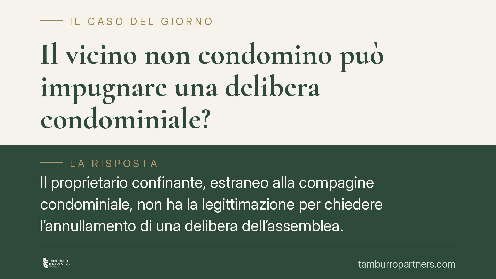

Il vicino non condomino può impugnare una delibera condominiale?
Il proprietario confinante, estraneo alla compagine condominiale, non ha la legittimazione per chiedere l'annullamento di una delibera dell'assemblea. Lo ribadisce una recente pronuncia di merito, in linea con un orientamento consolidato. Al terzo resta solo l'azione di nullità, e a condizioni rigorose. Vediamo cosa significa in concreto per chi abita accanto a un condominio.

Il caso
Un proprietario confinante contesta una delibera dell'assemblea condominiale perché ritiene che incida sui propri interessi. Non è però condomino: la sua proprietà confina con l'edificio, ma non ne fa parte.
Una recente pronuncia del Tribunale di Salerno affronta il punto e conferma un principio già noto: il terzo non condomino non può agire per l'annullamento della delibera ai sensi dell'art. 1137 c.c. Può, al più, invocarne la nullità, ma solo dimostrando uno specifico e concreto interesse.
(Il riferimento alla sentenza è da verificare quanto agli estremi: l'indicazione reperibile riporta un anno anomalo. Il principio di diritto espresso, in ogni caso, è pacifico e trova fondamento nella giurisprudenza di legittimità richiamata di seguito.)
Inquadramento normativo
L'art. 1137 c.c., nel testo riformato dalla L. 220/2012, disciplina l'impugnazione delle delibere assembleari. Il secondo comma riserva l'azione di annullamento ai condomini assenti, dissenzienti o astenuti. È dunque un rimedio interno alla compagine condominiale: presuppone la qualità di condomino.
Il termine per agire è di trenta giorni, a pena di decadenza. Il *dies a quo* (il momento da cui decorre) non è unico: per i condomini dissenzienti o astenuti presenti in assemblea decorre dalla data della deliberazione; per gli assenti decorre dalla comunicazione del verbale. La distinzione è tutt'altro che teorica e incide sulla tempestività dell'azione.
Cosa diverso è la nullità, azionabile ex art. 1421 c.c. da chiunque vi abbia interesse e senza limiti di tempo. Qui entra il terzo non condomino: può far valere la nullità, ma deve provare un interesse qualificato e attuale.
Il discrimine tra delibere nulle e delibere annullabili è fissato dalle Sezioni Unite della Cassazione con la sentenza n. 4806/2005. Secondo questo leading case, sono nulle le delibere prive degli elementi essenziali, con oggetto impossibile o illecito, o che incidono su diritti individuali inderogabili; sono invece annullabili i vizi di procedura, di convocazione o di maggioranza. La differenza determina chi può agire e in quali termini.
Implicazioni pratiche
Per il vicino confinante la conseguenza è netta. La sua posizione è quella di un terzo: non dispone del rimedio dell'annullamento, più agile e con causali più ampie.
Resta la strada della nullità, ma è più stretta. Non basta un generico fastidio o un timore: occorre dimostrare che la delibera lede un proprio diritto in modo diretto. In mancanza, l'azione è destinata a essere dichiarata inammissibile per difetto di interesse.
Va aggiunta una precisazione utile. Se la delibera incide su un diritto reale del confinante — ad esempio su distanze, servitù o sull'uso di un bene comune che lo riguarda — il terzo conserva comunque gli ordinari strumenti a tutela della proprietà, indipendenti dalla disciplina condominiale. L'azione reale non passa per l'art. 1137 c.c. e segue regole proprie.
Cosa fare in concreto
- Verifica la tua posizione: accerta se sei condomino o terzo confinante. Da questo dipende il rimedio esperibile.
- Identifica il vizio: distingui tra un vizio procedurale (annullabilità) e una lesione di un diritto inderogabile (nullità), perché cambiano legittimazione e termini.
- Controlla i termini: se sei condomino, calcola i trenta giorni a partire dalla deliberazione o dalla comunicazione del verbale, secondo la tua posizione in assemblea.
- Documenta l'interesse: se agisci come terzo per nullità, raccogli gli elementi che provano la lesione concreta di un tuo diritto.
- Valuta un vaglio tecnico preventivo: prima di avviare un contenzioso è opportuno un esame della delibera e della documentazione, per evitare azioni inammissibili.
Disclaimer
Contributo informativo a cura di Tamburro & Partners - Avv. Giuseppe Tamburro. Non costituisce parere legale.
Ogni condominio ha una storia a sé.
Se gestisci un'amministrazione e vuoi un confronto su una specifica questione condominiale, scrivi allo studio. Ti rispondiamo entro un giorno lavorativo.